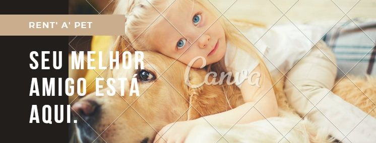

Rent a Pet
A nossa historia se inicia em um grupo de amigos que se sensibilizou com a grande quantidade
de animais abandonados nas ruas.
Vivemos uma triste realidade que vem aumentando a cada dia, o abondono
de animais, sabiamos que algumas cois deveria ser feita! Entao é dai que surge a "Rent a Pet", uma ideia
inovadora que tem como principal objetivo recolher pets da ruas, tratalos e disponibilizalos para locacao
,ponde dendo assim ser alugado para as pessoas
Na nossa realidade cotidiana á muitas pessoas que querem adotar um pet, mais por seu estilo de vida
ou moradia as vezes se torna impossivel, já de contrata partida as pessoas juridicas é onde está nosso publico
alfa, a "Rent a Pet" local a grande maioria de seus animais para empresas gravadoras, onde aparecem em filmes,
novelas,seriados e etc...
A "Rent a Pet" chega ao mercado brasileiro para oferecer o que há de mais fofos em pets, promovendo diversao e
interacao com seu tutor.
Comproetida com a exelencia qualidade de vida de seus pets a "Rent a Pet" apresenta ao um rigoroso controle
de qualidade e testes realizados em centro veterinario, tendo assim um controle absoluto com a saude de todos
os animais.
Afinal a "Rent a Pet" é uma empresa inovadora pautada em responsabilidade ,respeito aos seus clientes, e
principalmente ao cuidados e nutricao de seus animais.